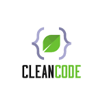
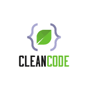

ホームページとは、インターネット営業所である
企画⇨デザイン⇨コーディング⇨公開⇨運用まで、Web制作の全てを行うフルスタックエンジニア
OGP(SNS)設定と正攻法のSEO(検索エンジン)対策を施したうえでGoogleAnalyticsを用います。
公開後はアクセス解析を継続して行い、サイトの流入数とコンバージョン(購買)率を見える化。
PDCAサイクルを回し、効率的にコンテンツを改善し売上の向上へと繋げていきます。

自己紹介

Greeting
完全未経験からプログラミングを独学。
Webの世界で無限に創作できるWebクリエーターという仕事に魅了されました。
これまで培ってきた経験で得たコミュニケーション力・管理スキルを生かしつつ、
「 楽しくお仕事 」がモットーです。
Web制作においては、お取引先様の求める条件を満たし、売上・デザイン・集客・保守運用を考えた、
成果物納品後からスタートする
「長いお付き合いのできるものづくり」が信条です。
その為に必要なあらゆる吸収努力を惜しまず、プロのプログラマーとして生涯キャッチアップし続けます。
Personal data
高見政光
1979年生まれ。 新潟県出身。
歴史とテクノロジー分野を好み、趣味は家庭菜園・料理・筋トレ・フットサルです。
長友選手の８つ上ですが、ばりばり走ります。
シンプルでユーザビリティなサイト が好みです。
- Career
- 2001年 敬和学園大学 国際文化学科 卒業
- 2001年〜2006年 飲食店 勤務
- 2006年〜2022年3月 製造メーカー 勤務
- 2022年4月〜現在 独学でプログラミングを習得中
作品実績
〜 全て実在の企業様です 〜


CSS フレームワーク作品
〜 多様なフレームワークを用いたサンプルサイト 〜


その他作品
〜 内容に応じ適切なツールを用います 〜


{kind=link}
{kind=link}
{kind=link}
{kind=link}
{kind=link}
{kind=link}
{kind=link}
{kind=link}
{kind=link}
{kind=link}
{kind=link}
{kind=link}
技術
〜 基礎を習得済みで、
実践で使用できる技術群になります 〜
「HTML/CSS」1からコーディングを行いオリジナルのWebページ制作やコーディングが行えます
「JavaScript」プルダウンメニュー,スライドショー,3D画像,ダークモードなどの動きを実装します
「JQUERY」メニュー・ドロワー等、スマートフォン表示で必須となる動きのある機能をもたせます
「GoogleAnalytics」アクセス解析を行い見える化。適切な対策を施し集客xコンバージョン率=売上を上げます
「PHP」お問合せフォームの実装や、ワードプレスにおいては型に捉われないオリジナルテーマでの制作が可能です
「SQL」データベースの基礎知識を得たうえで、セキュリティや効率的なフレームワークの活用を行います
「WORDPRESS」複数のサイト制作経験と、作品群の一つに実案件の制作実績として入れております
「Bootstrap」CSSフレームワーク「ブートストラップ」を扱え、コンテンツファーストのコンポーネント設計が出来ます
「Sass」CSSをより便利に効率的に書けるようにしており、当ポートフォリオはSassで書かれています
「Vue.js」JavaScriptフレームワークを使用したWebアプリケーション開発とコマンドラインツールVueCLI3
「Nodejs」SPA(Single Page Application)の為のサーバーサイト実行環境 ※ターミナルは苦手でした
「Webpack」Nodejsのモジュールハンドラで、Webコンテンツを構成する各ファイルをまとめます
「Babel」多くのWebブラウザで利用可能なES5のプログラムに変換するトランスパイラツールです
「Procreate」Ipad Pro で Apple Pencil を使い、アナログ風のある絵やイラストを描くことが出来ます
「Figma」Figmaを使用し１からUIデザインやバナー広告を作成することが出来ます
「Illustrator」背景透明ロゴ・イベントカレンダー・メニュー/料金表・アクセスマップ等の実用的デザイン
「Photoshop」基本的扱いが出来、Webデザインにおけるデジタルの画像編集が行えます
「git」バージョン管理システムを用いてバックアップを行い、実際にURLを取得し複数のサイト管理を行っています
「GitHub」大型案件のチーム開発に備え、GitHubを用いた複数人での作業を可能としています
スケジュール
- 2022.9
-
基本情報技術者資格学習
- 2022.10
-
商業活動、就職活動
- 2022.11
-
商業活動、就職活動
- 2022.12〜
-
TypeScript学習
Amazonウェブクラウドサービス
ReadableCode
セキュリティ/脆弱性原理と対策
SPA(Single Page Application)技術の深掘り 

自宅オフィス

Always On
家庭と仕事の線引きをしっかりする為、ワーキングスペースとして専用の防音部屋を使用。
Gmailやビジネスチャット「Slack」にて通知を活用し即返信、24時間365日常に連絡が付くようにしています。
Facebook社のマーケティング用語で、『企業にとってSNSは「Always On」である』とあります。
私はこの言葉を自分に課し、時間外であろうが仕事の連絡がすぐにつく姿勢を大切にします。
効率化のためのツール
機材の環境としては、MacBook Pro16インチをクラムシェルモードで使用、
作業効率を最大限得るためデュアルモニターに接続し表示しています。
またレスポンシブデザイン確認の為、ディベロッパーツールで調整後に
iPad Pro(12.9インチ)、iPhone SEにて実機を用い表示確認を行ないます。
機能や互換性を考え、高性能WindowsノートPC(Core i7)とAndroidスマートフォンを備えています
通信に関しては戸建10GBの光回線を直接LANで使用していますので、時間帯や周囲の環境に左右されることなく
アップ/ダウン共に90Mbpsの超高速を維持し、複数デバイスを用いてのビデオ会議に対応します。
お問い合わせ
ライン公式アカウント